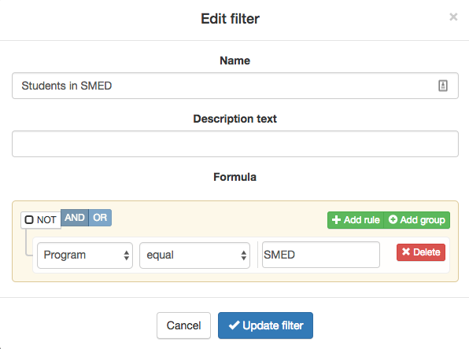
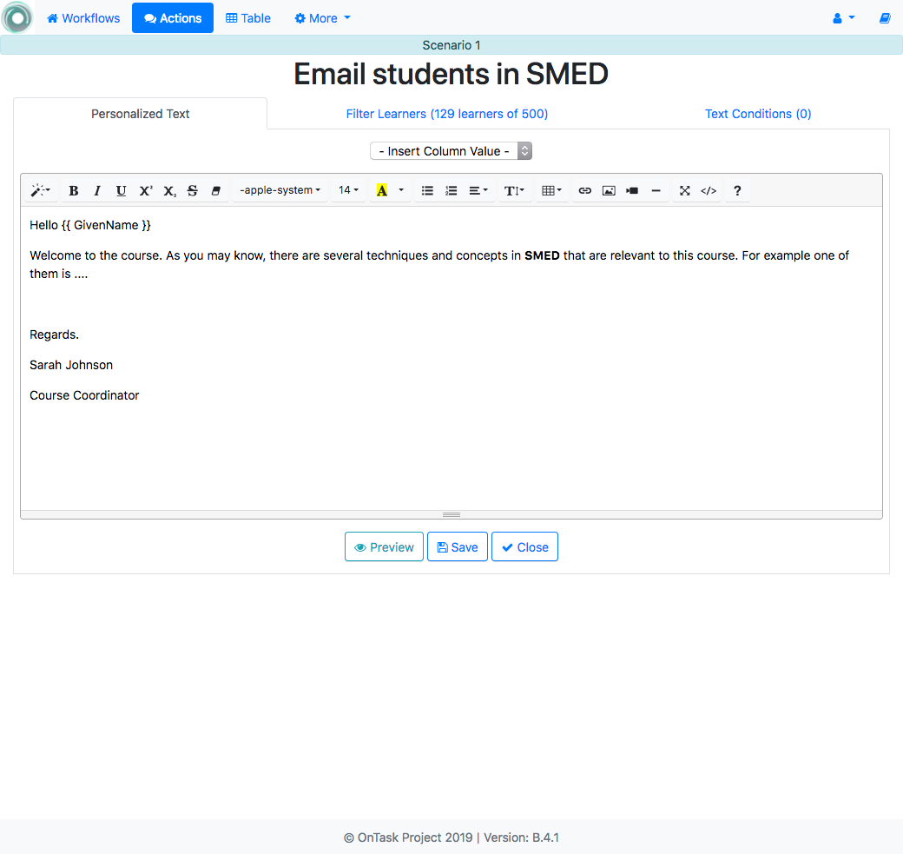
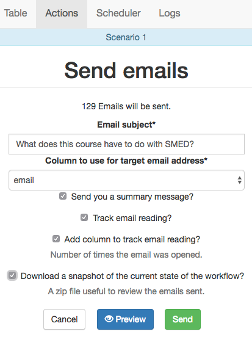

4.1. Scenario? I don’t even know what the tool does¶
CSV data file:
Scenario 1 Data File.Workflow data file:
Scenario 1 Workflow File.
Suppose you have a course with 500 students and they take the course as part of four programs named FASS, FEIT, FSCI, SMED in different disciplines. They are all related, but at the same time different. You would like to send them a text explaining the connection between the material studied in the course and their discipline. The task would then consist of drafting four email texts each of them explaining the connection respectively with FASS, FEIT, FSCI and SMED, and then send the appropriate message to each student.
Suppose now that you do have the class listing in an excel sheet. The table has the names of the students (one student per row), and the column named Program contains for each student one of four possible values “FASS”, “FSCI”, “FEIT” or “SMED”.
Steps
Create a new workflow (click in the New Workflow button in the home page of the tool). Introduce a name and a description (optional) for this workflow.
Open the newly created workflow by clicking its name. A page titled Workflow Details will be shown.
The page says that there is no data uploaded yet, and to upload it you need to click in the Dataops link either at the bottom of the text or at the context menu at the top.
A new page titled Upload/Merge appears. Select the option CSV Upload/Merge and follow the instructions to upload the
CSV file(select all the columns to upload)Click the Details page to see a summary of the elements in the workflow: 500 rows, 10 columns, 4 actions and 0 attributes. All the steps up to here can be done by
importing the given workflow file.Click the Table link at the top of the page and browse through the data included in the workflow. Locate the column called Program and verify that it has the correct values.
Click the Actions link at the top of the page. The new page contains a list of actions available for this workflow. Click on the button to create a New Action Out to send an email to the students in the SMED program. Choose an name and description (optional) for the action, for example Email students in SMED.
We now create a filter that selects only those students for which the column Program has the name SMED. Click in the Add Filter button at the top of the page and in the new screen introduce the elements shown in the following figure:
The filter has name Students in MED and the students are selected if the given Formula is true. In other words, if the Program column is equal to SMED. Create the filter.
Once the filter is created the top of the Action Out screen now shows how many students have been selected by the filter (in this example 129 out of 500).
Write now the greeting at the top of the text area and select from the pull-down menu labeled Insert column name the GivenName. You will see how the string
{{ GivenName }}is inserted in the text. This is the way OnTask has to mark that the string with the double curly braces should be replaced by the value of the column GivenName.Complete the rest of the message with a text explaining why the material and activities in this course are relevant to the SMED program. The Action Out screen should look similar to the one shown in the following figure:
Once you are satisfied with how the text read, click in the Preview button at the bottom of the page and you will see how the message is produced by changing the name of the student (the rest of the text remains the same). Use the arrows to traverse the list of 129 students in this group.
Save and close the Action Out. You go back to the screen showing you all the actions in the workflow (you can see the one we just created). If you click in the Email button, you will be asked for some extra data such as the email subject, the column to use as email address and some options to track email reading or even obtain a snapshot (duplicate) of the workflow as it is right now for future reference.
That’s it! You now can create three additional similar messages to send emails to the students in the other three programs (FEIT, FASS and FSCI) with an almost identical rule (changing the condition in the filter and the email text).